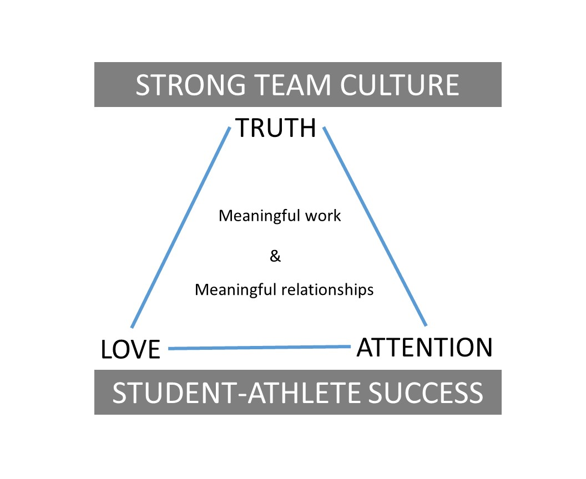

My Coaching Philosphy
Everyone has their "one quote" that they live by. Mine is this one, from Coach Bobby Knight:
"I've never felt my job was to win basketball games. Rather, that the essence of my job as a coach was to do everything I could to give my players the background necessary to succeed in life."
This is what drives me, and this is why I got into coaching: to help make the lives of my team members better.
With Bobby Knight's quote as my guiding light, I developed my coaching philosophy to help chart the course for my coaching journey. Its purpose is to (1) articulate my goals, and (2) let you know how I plan to achieve those goals.
In one sentence, my coaching philosophy is:
My coaching philosophy prioritizes the holistic development of my players, recognizing that winning basketball games is merely a byproduct of nurturing their growth as individuals. By embodying integrity, responsibility, communication, positivity, trust, and teamwork, I aim to provide a supportive environment where players can develop essential life skills, fostering their success on and off the court.
The details of this coaching philosophy can be found below:
Personal Development Focus
- Implement strategies and programs to support players' personal growth beyond basketball.
- UEmphasize character development, leadership skills, and academic success as integral parts of the coaching process.
Team Culture Building
- Establish a supportive and inclusive team culture based on trust, respect, and open communication.
- Foster a sense of belonging and unity within the team, where every player feels valued and encouraged to contribute positively to the team's success.
Goal #1: Individual Growth
- Help players develop essential life skills such as leadership, discipline, and resilience.
- Empower them to become confident, well-rounded individuals capable of navigating challenges in any aspect of life.
Goal #2: Team Success
- Strive for success on the basketball court while keeping the focus on the collective growth and development of the team.
- Aim to cultivate a winning culture that prioritizes sportsmanship, teamwork, and camaraderie over mere victory.
Core Value #1: Holistic Development
- Prioritize the growth of players as individuals, beyond just their skills on the basketball court.
- Foster an environment that nurtures their personal, social, and emotional well-being.
- Emphasize character-building, integrity, and life skills alongside basketball skills.
Core Value #2: Student-Centric Approach
- Focus on equipping players with the tools and background necessary for success in life, not just in sports.
- Recognize the importance of academic excellence and personal growth alongside athletic achievements.
- Encourage a mindset of continuous learning, resilience, and adaptability.
Core Value #3: Supportive Environment
- Create a culture of trust, respect, and teamwork within the team.
- Provide mentorship, guidance, and encouragement to help players reach their full potential.
- Foster inclusivity, positivity, and open communication to ensure every player feels valued and supported.
my Coaching Philosophy in One Picture:
I aim to foster student-athlete success by building a strong team culture where the goals are meaningful work and meaningful relationships achieved through core values of truth, love, and attention.
Further reading:
The above summarizes by coaching philosophy. If you'd like to learn more, I do maintain a more comprehensive document of the "Principles" I live by which can be found here.
Thanks for reading, and please let me know if you have any thoughts or feedback!